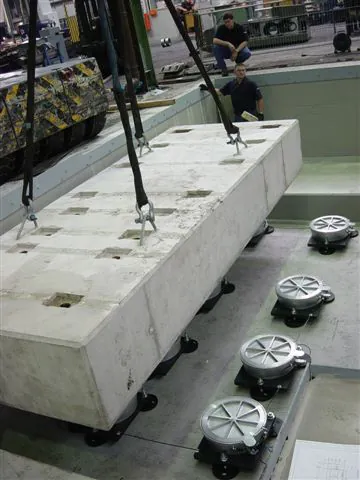

Rozwiązanie
Wibroizolacja fundamentów
Izolacja drgań fundamentów blokowych w zakładach produkcyjnych — jedno z najważniejszych zastosowań technologii Bilz. Wibroizolacja fundamentów zapobiega przenoszeniu drgań z ciężkich maszyn na konstrukcję budynku i sąsiednie stanowiska pracy.
Fundamenty maszyn posadowione na wibroizolatorach pneumatycznych BiAir lub stopach poziomujących Bilz skutecznie tłumią drgania, chroniąc zarówno precyzyjne urządzenia pomiarowe w pobliżu, jak i samą konstrukcję budynku.
Typowe zastosowania
- Fundamenty blokowe pod prasy i młoty
- Posadowienie ciężkich obrabiarek CNC
- Izolacja kompresorów i agregatów
- Fundamenty maszyn w zakładach produkcyjnych QM
Rekomendowane produkty

